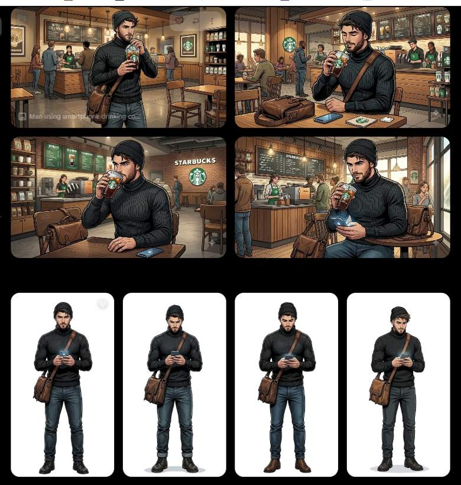
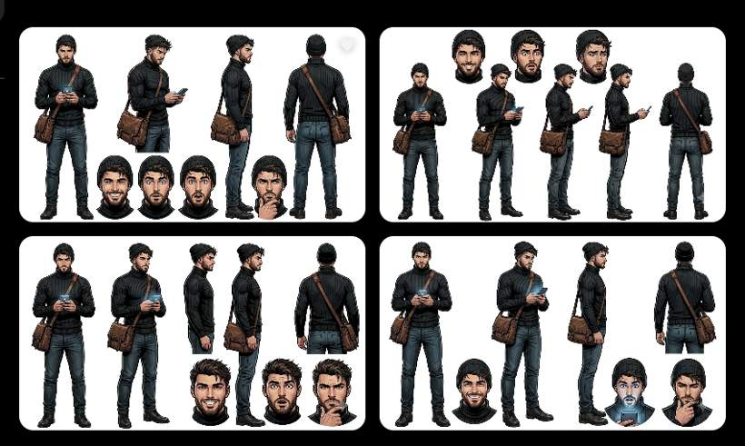
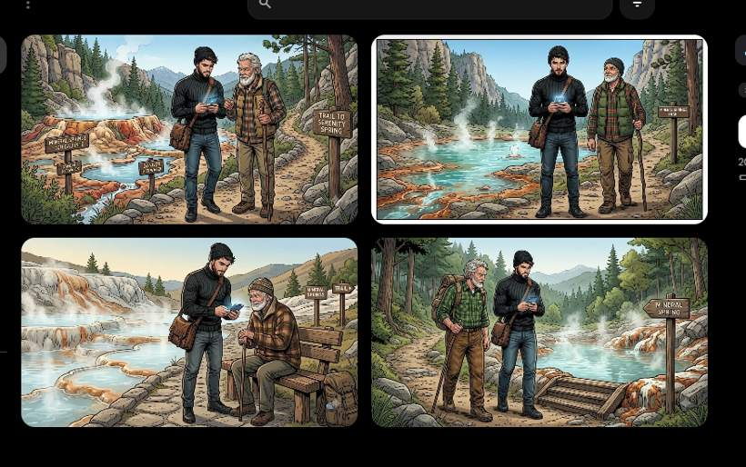

오늘의 지도
오늘은 새 주인공을 처음부터 제대로 세우고, 그 사람의 하루를 두 장면 영상으로 만듭니다.
핵심12회차 중 오늘은 여기
기본(1~4)에서 배운 프롬프트·주인공·콘티·카메라를 응용(5~8)에서 한 편으로 묶어 갑니다.
핵심오늘 만드는 순서
앞 단계에서 만든 것을 다음 단계에 레퍼런스로 넣습니다. 그래서 순서를 건너뛰면 안 됩니다.
핵심오늘의 규칙 세 줄
STEP 1에서 지난번 결과물을 보면서 이 세 줄이 왜 필요한지 직접 찾아봅니다.
핵심오늘 계속 쓰는 말 · 계속 누르는 곳
| 말 | 뜻 |
|---|---|
| 레퍼런스 | AI에게 "이걸 보고 그려"라고 보여 주는 참고 그림. 오늘은 앵커·시트·장소 사진이 레퍼런스가 됩니다. |
| 앵커 | 주인공의 기준 사진 한 장 (STEP 2) |
| 시트 | 앵커를 앞·옆·뒤로 펼친 한 장 (STEP 3) |
| 스타트 · 엔드 | 영상의 첫 장면 · 마지막 장면 (지난 시간에 배운 것) |
| 하고 싶은 것 | 플로우에서 누르는 곳 |
|---|---|
| 이미지 ↔ 영상 바꾸기, 모델·비율·개수 정하기 | 입력창 오른쪽 아래 모델 이름(Nano Banana 2.1 · ▯ · x1)을 누릅니다. |
| 내 사진을 플로우에 올려 두기 | 왼쪽 메뉴 「업로드」 |
| 올려 둔 사진·만든 그림을 레퍼런스로 넣기 | 입력창 왼쪽 「+」 → 그림 고르기 (여러 장 넣을 수 있습니다) |
| 만든 그림·영상 저장하기 | 결과에 마우스를 올리면 위에 나오는 다운로드 아이콘 |
| 프롬프트 넣기 | 이 교안의 「복사」 → 플로우 입력창에 붙여 넣기(Ctrl+V) |
준비시작 전에 확인하세요
설정오늘 쓰는 모델
이미지
플로우 입력창 오른쪽 아래 모델 이름이 Nano Banana 2.1인지 확인합니다.영상
Omni 1.1 Flash · 360p로 만듭니다. 크레딧을 12주 동안 나눠 써야 해서 720p로 다시 만들지 않습니다.이렇게 되면 안 됩니다
AI는 말하지 않은 것을 그대로 둡니다. 지난번 결과물에서 이상한 곳을 먼저 찾아봅니다.
핵심폰은 어떻게 네 칸에 다 들어갔을까
앵커가 폰을 들고 있으면, AI는 폰도 이 사람의 일부라고 봅니다. 그래서 시트를 만들면 모든 방향에 폰을 그려 넣습니다. 앵커에서 손을 비우면 시트도 깨끗해집니다.
다 같이① 카페 장면과 앵커 — 무엇이 이상한가요?

위: 카페 장면 4장 · 아래: 그 장면으로 다시 만든 앵커 4장
정답 보기
- 카페 장면에서 컵·폰·가방을 모두 들고 있습니다.
- 컵과 벽에 실제 커피 브랜드 로고가 나왔습니다. SNS·공모전에 올리면 문제가 됩니다.
- 앵커는 흰 배경이 되었지만 손에 폰, 어깨에 가방이 그대로 있습니다.
- 네 장의 신발 색이 검정·갈색으로 다르고, 발밑에 그림자가 생겼습니다.
원인: 캐릭터를 장면 프롬프트("스마트폰을 보며…")로 만들고, 그 장면 그림을 앵커로 썼습니다.
다 같이② 캐릭터 시트 — 무엇이 이상한가요?

정답 보기
- 모든 칸에 폰과 가방이 있습니다.
- 표정 칸에서 비니가 있다 없다 합니다.
- 칸 수와 배치가 장마다 다릅니다.
- 폰 빛이 얼굴을 비춥니다.
원인: 앵커에 폰이 있었고, 유지할 것을 "같은 옷"으로 뭉뚱그렸고, 앞·옆·뒤와 표정을 한 장에 다 넣었습니다.
다 같이③ 약수터 장면 — 무엇이 이상한가요?

정답 보기
- 한국 약수터가 미국 국립공원 온천이 되었습니다.
- 표지판이 전부 영어입니다.
- 여전히 폰을 보고 있습니다.
- 할아버지가 컷마다 다른 사람입니다.
원인: 장소를 말로만 썼고, 손에 할 일을 주지 않았고, 할아버지 앵커가 없었습니다.
정리원인과 고치는 규칙
| 보인 문제 | 원인 | 오늘의 규칙 |
|---|---|---|
| 앵커·시트에 폰·가방 | 캐릭터를 장면으로 만들었음 | 규칙 1 앵커는 빈손 · 기본 복장 · 단색 배경 |
| 칸마다 비니·신발이 바뀜 | "같은 옷"으로 뭉뚱그림, 장면 그림을 같이 넣음 | 규칙 2 시트는 앵커 한 장만, 유지할 것은 하나하나 적기 |
| 미국 온천 · 영어 표지판 · 계속 폰 | 장소를 말로만, 손이 비어 있음 | 규칙 3 장소 사진을 넣고, 손에 할 일을 준다 |
| 실제 브랜드 로고 | 로고를 막지 않음 | 장면마다 no logos |
한 걸음 더소품은 두 종류입니다
| 걸치는 소품 | 손에 드는 소품 |
|---|---|
| 모자 · 안경 · 스카프 · 귀걸이 | 폰 · 컵 · 가방 · 우산 · 꽃다발 |
| 앵커에 넣어도 됩니다. 이 사람을 알아보는 표시가 됩니다. | 앵커에서 뺍니다. 장면 프롬프트에서 그때그때 쥐여 줍니다. |
오늘 서윤의 표시는 목에 두른 노란 스카프 하나입니다.
앵커 만들기
앵커 = 모든 장면이 기준으로 삼는 주인공 사진 한 장. 배가 닻을 내리듯 주인공의 생김새를 이 한 장에 묶어 둡니다.
핵심앵커의 조건 여섯 가지
| 조건 | 이유 |
|---|---|
| 정면 · 차분한 무표정 | 각도와 표정은 나중에 바꿀 것이라 기준 사진에서는 빼 둡니다. |
| 전신 (두 발까지) | 상반신만 있으면 시트에서 바지·신발을 AI가 지어내서 컷마다 달라집니다. |
| 빈손 · 팔은 몸 옆에 | 손 위치를 써 주지 않으면 AI가 뭔가를 쥐여 줍니다. |
| 기본 복장만 | 걸치는 소품은 하나까지. 가방·폰은 넣지 않습니다. |
| 연회색 단색 배경 · 그림자 없음 | 배경이 있으면 시트와 장면에 배경이 섞여 들어옵니다. |
| 세로 9:16 | 서 있는 전신이 화면에 크게 들어갑니다. |
다 같이서윤 앵커 만들기
레퍼런스를 넣지 말고 새로 만듭니다. 문장은 두 부분입니다. 첫 줄이 주인공 설명, 나머지는 고정 문장입니다.
네 장 중 아래 고르는 기준에 가장 맞는 한 장을 골라 저장합니다. 예쁜 것보다 기준에 맞는 것이 우선입니다.
내 차례내 주인공 앵커
같은 문장에서 첫 줄만 바꿉니다. 아래에서 주인공을 고르거나, 첫 줄을 직접 써도 됩니다.
첫 줄을 직접 쓸 때 들어갈 것
나라·나이·성별 / 머리 모양 / 윗옷 / 바지·신발 / 걸치는 소품 하나. 한글로 써서 딥엘로 번역해도 됩니다.고르는 기준네 장 중 한 장 고르기
주의이럴 땐 이렇게
- 발이 잘림 → 비율이 9:16인지 확인하고 다시 만듭니다.
- 그래도 뭔가를 들고 있음 → 그 이미지를 「+」로 넣고 아래 문장을 보냅니다.
Make the hands empty, arms relaxed at the sides. Keep everything else the same. - 지난번 그림을 넣고 싶음 → 넣지 마세요. 폰과 가방이 다시 따라옵니다.
- 실존 인물(연예인)의 얼굴은 쓰지 않습니다.
한 걸음 더지난번 시트를 마스크로 고치기
나노바나나 2.1의 마스크 편집으로 칠한 곳만 바꿀 수 있습니다. 지난번 시트를 열고 폰과 가방만 칠한 뒤 아래 문장을 보냅니다.
마스크 = 고칠 곳만 붓으로 칠해서 표시하는 것. 칠할 때는 물건보다 조금 넓게 칠해야 흔적이 남지 않습니다.
한 걸음 더함께 나올 사람도 앵커 한 장
약수터의 할아버지처럼 컷마다 얼굴이 바뀌지 않게 하려면, 함께 나올 사람도 같은 고정 문장으로 앵커를 한 장 만들어 둡니다. 장면에서는 내 시트와 그 사람의 앵커를 함께 레퍼런스로 넣습니다.
캐릭터 시트
시트 = 앵커 한 사람을 정면·옆·뒤로 펼친 한 장. 앵커 한 장만 넣고 만듭니다.
핵심앵커 한 장 → 네 방향 한 줄
앵커가 "이렇게 생겼다"라면, 시트는 "옆과 뒤는 이렇다"입니다. 시트가 있으면 장면에서 옆모습·뒷모습이 나와도 같은 사람으로 그려집니다.
다 같이서윤 시트 만들기
입력창 왼쪽 「+」로 서윤_앵커를 넣고 아래 문장을 그대로 붙여 넣습니다. 이 문장은 누구의 앵커든 고칠 곳이 없습니다.
내 차례내 주인공 시트
- 「+」로 내 앵커 한 장만 넣습니다.
- 위 문장을 그대로 붙여 넣습니다.
- 가장 잘 나온 한 장을 내이름_시트로 저장합니다.
빨리 끝난 분은 아래 「한 걸음 더」의 표정 시트까지 만들어 두세요. 다음 시간 말하는 영상에서 씁니다.
고르는 기준시트 확인
주의막혔을 때
| 이렇게 나오면 | 이렇게 고칩니다 |
|---|---|
| 칸마다 옷이 다름 | 레퍼런스가 앵커 한 장인지 확인합니다. 다른 그림이 같이 들어가 있으면 빼세요. |
| 칸이 다섯 개 이상 | 문장에 "Exactly four"가 그대로 있는지 확인하고 다시 만듭니다. |
| FRONT·BACK 같은 글자가 생김 | "no labels, no text"가 들어 있는지 확인하고 다시 만듭니다. |
| 한 칸만 이상함 | 그 시트를 「+」로 넣고 Fix only the back view so it matches the other three views. Keep everything else the same.를 보냅니다. (back을 이상한 칸 이름으로) |
한 걸음 더표정 시트
방금 만든 시트를 레퍼런스로 넣고 만듭니다. 감정 단어는 내 이야기에 맞게 바꿔도 됩니다.
장소 사진 정하기
장소 사진 = 장면의 배경 레퍼런스. AI가 장소를 상상하지 않고 이 사진을 따라 그립니다.
핵심왜 사진을 넣을까요
| 말로만 썼을 때 (지난번) | 사진을 넣었을 때 (오늘) |
|---|---|
| "약수터" → AI가 아는 가장 흔한 온천을 그립니다. 그래서 미국 국립공원과 영어 표지판이 나왔습니다. | 사진 속 장소를 따라 그립니다. 돌담, 나무, 바다 색까지 사진에 가깝게 나옵니다. |
오늘은 하루의 두 장면이라 장소 사진도 두 장입니다. 오전 한 장, 오후 한 장.
다 같이제주 사진 두 장 저장하기
- 아래 링크로 언스플래시를 엽니다.
- 마음에 드는 사진을 눌러 오른쪽 위 「다운로드」를 누릅니다.
- 「주인공의하루」 폴더에 서윤_장소_오전, 서윤_장소_오후로 저장합니다.
- 플로우 왼쪽 메뉴 「업로드」로 두 장을 올립니다. 올려 둔 사진은 STEP 5에서 입력창 「+」로 골라 레퍼런스로 넣습니다.
내 차례내 주인공의 하루, 어디서 보낼까요
여행지를 하나 골라 오전 한 장, 오후 한 장을 저장합니다. 여기서 고른 곳이 STEP 5의 프롬프트로 이어집니다.
가 본 곳이 있으면 내가 찍은 사진이 가장 좋습니다.
고르는 기준좋은 장소 사진
한 걸음 더사진 한 장으로 오전·오후 만들기
마음에 드는 장소 사진이 한 장뿐이면, 그 사진을 「+」로 넣고 빛만 바꿔 오후 사진을 만듭니다.
Keep exactly the same place, same camera angle and same composition as the attached photo. Only change: late afternoon golden sunlight with longer soft shadows. No people, no text.
한글 뜻 보기
첨부 사진과 같은 장소·같은 각도·같은 구도를 그대로. 바꾸는 것 하나만: 늦은 오후의 금빛 햇살, 길고 부드러운 그림자. 사람·글자 없음.
주의사진 출처
핀터레스트 사진은 원래 주인이 따로 있어 저작권 문제가 생길 수 있습니다. 언스플래시·펙셀처럼 무료로 쓰도록 허락된 곳이나 내가 찍은 사진을 씁니다.
서윤의 하루 두 장면
시트 + 장소 사진을 함께 넣고, 장면마다 스타트 → 엔드 → 영상 순서로 만듭니다.
핵심한 장면을 만드는 순서
| 단계 | 넣는 레퍼런스 | 할 일 |
|---|---|---|
| 스타트 이미지 | 시트 + 장소 사진 | 장면의 첫 모습. 손에 할 일을 줍니다. |
| 엔드 이미지 | 방금 만든 스타트 한 장 | 같은 사람·같은 장소·같은 카메라, 바뀌는 것 하나만 |
| 영상 | 스타트 + 엔드 | 그 사이를 움직임으로 잇습니다. |
핵심톤 한 줄 — 두 장면의 색을 맞추는 문장
두 장면 끝에 똑같은 한 줄을 붙이면 색감이 통일되어 한 편처럼 보입니다. 아래 프롬프트에는 이미 들어 있습니다.
진행다 같이는 장면 1만 따라 합니다
크레딧 아끼기
장면 1은 스타트·엔드 이미지까지 함께 따라 하고, 영상과 장면 2는 강사 화면으로 봅니다. 영상은 내 차례에서 내 주인공으로 두 개만 만듭니다.다 같이장면 1 · 오전 귤밭
강사 시연장면 2 · 오후 협재 바다
장면 1과 순서가 똑같습니다. 레퍼런스만 장소_오후로 바꿉니다. 화면으로 함께 봅니다.
내 차례내 주인공의 하루 두 장면
STEP 4에서 고른 여행지를 선택하면 문장이 그 장소로 바뀝니다. 오른쪽 단추로 장면 1 · 장면 2를 바꿔 봅니다. 레퍼런스는 내 시트와 내 장소 사진을 넣습니다.
고르는 기준영상 만들기 전에
주의이럴 땐 이렇게
| 문제 | 고치는 법 |
|---|---|
| 얼굴이 바뀜 | 레퍼런스에 시트가 들어 있는지 확인 |
| 폰·가방이 다시 나옴 | 앵커부터 빈손인지 확인, 장면에 손에 할 일 주기 |
| 장소가 사진과 다름 | 장소 사진이 들어 있는지, 사람 없는 사진인지 확인 |
| 영어 간판 | "no text or signs" 확인, 장소 사진에 간판이 있으면 다른 사진으로 |
| 영상이 튐 | 엔드에서 카메라 위치가 바뀌었는지 확인, 바꾸는 건 하나만 |
한 걸음 더다시 만들지 말고 말로 고치기
영상이 거의 마음에 드는데 한 곳만 아쉬우면, 그 영상을 연 상태에서 한 문장으로 고칩니다. 크레딧도 아낄 수 있습니다.
카메라 움직임도 실험해 보세요. 영상 문장의 Static camera를 Slow push-in(천천히 다가가기)으로 바꾸면 4회차에 배운 카메라 워크가 들어갑니다.
세로 영상이 필요하면 스타트·엔드를 9:16으로 만들면 됩니다. 릴스·쇼츠용입니다.
캡컷 조립 · 음악 넣기
두 영상을 순서대로 붙이고, 픽사베이에서 받은 음악 한 곡을 깔면 한 편이 완성됩니다.
핵심영상 줄 + 음악 줄
캡컷 타임라인은 위에 영상 줄, 아래에 음악 줄입니다. 영상 두 개를 붙인 다음, 그 아래에 음악을 깔고 영상 끝에 맞춰 자릅니다.
다 같이① 픽사베이에서 음악 받기
- 아래 링크로 픽사베이 음악을 엽니다.
- 곡 이름 옆 ▶로 들어 봅니다. 영상 분위기와 맞는 곡을 고릅니다.
- 오른쪽 「다운로드」를 누릅니다. 로그인 창이 뜨면 구글 계정으로 로그인합니다.
- 「주인공의하루」 폴더에 저장합니다.
다 같이② 캡컷에서 조립하고 음악 깔기
- 플로우에서 영상에 마우스를 올리고 다운로드 아이콘으로 두 영상을 「주인공의하루」 폴더에 저장합니다.
- 캡컷 새 프로젝트 → 가져오기로 영상 두 개와 음악 한 곡을 불러옵니다.
- 장면 1 영상을 타임라인에 끌어 놓고, 그 바로 뒤에 장면 2 영상을 붙입니다.
- 음악을 영상 아래 줄로 끌어 놓고, 앞쪽 끝을 영상 시작에 맞춥니다.
- 하얀 세로선(재생 위치)을 영상 끝에 두고 음악을 클릭 → 분할(Ctrl+B) → 뒤에 남은 음악을 지웁니다(Delete).
- 음악을 클릭 → 오른쪽 「기본」에서 페이드 아웃을 2초 정도로 올립니다.
- 오른쪽 위 「내보내기」 → 이름 서윤의하루 → 내보내기.
내 차례내 하루에 맞는 음악
내 여행지 분위기에 맞는 검색어로 한 곡을 골라, 같은 순서로 내이름의하루.mp4를 만듭니다.
마음에 드는 곡이 없으면 검색창에 분위기를 영어로 씁니다. 예: happy, sunset, lofi, acoustic.
고르는 기준어울리는 음악
주의자주 막히는 곳
- 클립 사이에 검은 화면 → 뒤 클립을 앞 클립 끝에 딱 붙입니다.
- 음악이 영상보다 길게 남음 → 영상 끝에서 분할하고 뒷부분을 지웁니다.
- 음악 때문에 현장음이 안 들림 → 음악을 클릭하고 볼륨을 조금 내립니다.
- 픽사베이 음악은 무료로 쓸 수 있지만, 유튜브에 올리면 저작권 알림이 뜨는 곡이 가끔 있습니다. 곡 이름을 메모해 두세요.
한 걸음 더전환 하나 + 현장음 살리기
캡컷 위쪽 「전환」 탭에서 디졸브를 두 클립 사이로 끌어 놓으면 오전에서 오후로 시간이 흐른 느낌이 납니다.
음악 볼륨을 영상 소리보다 낮게(예: 음악 40%) 맞추면, 귤 따는 소리·파도 소리가 음악 위로 살아납니다.
정리
오늘 만든 것을 확인하고 서로의 하루를 봅니다.
확인오늘 만든 것
다시 보기규칙 세 줄
- 앵커는 빈손 · 기본 복장 · 단색 배경
- 시트는 앵커 한 장만 넣고 만든다
- 장면에서는 장소 사진을 넣고, 손에 할 일을 준다
다음 시간7회차 · 말하는 영상
내 주인공이 화면을 보며 인사말을 건네는 영상을 만듭니다. 오늘 만든 앵커와 시트를 그대로 쓰니 꼭 저장해 두세요.